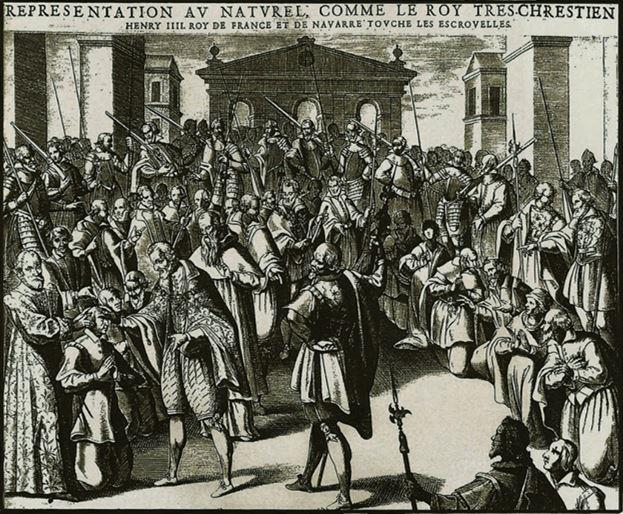
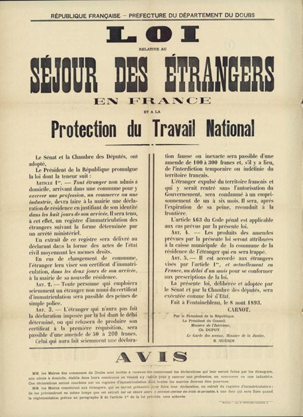

Ainsi donc l'agresseur de la policière était un Français né en France comme a dit le ministre de l'intérieur pour couper court à l'utilisation de cette affaire contre la politique migratoire. En fait ce policier amateur s'est tiré une balle dans le pied. Il ne fait que donner un argument contre la stupidité du droit du sol qui fait qu'un enfant d'immigrés non assimilés peut devenir français automatiquement en étant encore moins assimilé que ses parents au bout de quelques années de délinquance puis de radicalisation islamiste.
Comment est-on ou devient-on Français ? Cette question, comme une pièce de monnaie, a un côté face et un côté pile. Côté face, il y a les données de l’histoire et les exigences de l’intérêt national. Côté pile, il y a l’alchimie idéologique par laquelle la gauche a investi et perverti le débat. C’est ainsi que le droit du sol serait devenu un tabou, et un “marqueur” républicain. Ce sujet offre l’occasion de montrer comment la gauche l’emporte dans la bataille sémantique par une subversion des mots face à laquelle la prétendue “droite” révèle son indigence intellectuelle.
L’histoire est limpide. Les sujets du Roi de France étaient les hommes et les femmes qui naissaient et vivaient sur le territoire dont il était le Souverain. Ils étaient “régnicoles”, étaient soumis à la justice royale et ne demeuraient étrangers qu’à leur détriment, puisque, sans héritier, leurs biens devenaient alors la propriété du roi, à leur mort. La notion de nationalité n’avait guère de définition juridique précise.
Rousseau pouvait encore se proclamer citoyen de Genève. C’est cette conception monarchique qui prévaut en 1791. La France est toujours un Royaume. Le droit de la nationalité apparaît après la Révolution et c’est sous le consulat qu’il reçoit sa première définition.
Pas de chance pour la gauche : celle-ci est fondée sur le droit du sang et l’intention est claire. L’égalité acquise des Français leur donne ce pouvoir de transmettre à leurs héritiers, à leurs enfants, la qualité qui est désormais la leur d’être citoyens, comme les nobles avant 1789 transmettaient leurs titres de noblesse. Il est donc clair que le droit du sol est monarchique : c’est le maître du territoire qui détermine l’appartenance ou la dépendance. Il est aussi évident que le droit du sang est une conquête de la révolution et qu’il est donc le plus républicain des deux. Le droit du sol refera surface beaucoup plus tard pour des raisons démographiques et militaires et non poussé par le progrès démocratique. Notre pays, de loin le plus peuplé d’Europe avant la révolution et l’Empire, voit sa population stagner par rapport à celles de ses voisins et adversaires potentiels. La défaite de 1870 montre l’acuité du problème et l’urgence de sa solution. C’est dans ce contexte qu’apparaît le droit du sol qui, loin de témoigner d’une générosité particulière, est avant tout le droit du sang… qu’il faudra verser. La loi de 1851 vise à réduire le privilège des résidents étrangers d’échapper au tirage au sort. La loi de 1889, qui précède de peu l’instauration du service militaire a pour but de rendre la nationalité automatique et d’empêcher sa répudiation. Cette évolution va dans le sens de l’égalité puisqu’elle soumet les étrangers et les Français à la même obligation de défendre la “Patrie”, mais elle supprime une liberté, celle de s’y soustraire. On est très loin des Droits de l’Homme et de la démocratie.
Ce qui a guidé, jusqu’à la dérive récente de la gauche sur ces sujets, le droit de la nationalité était l’intérêt national. Les pays d’émigration préféraient le sang pour ne pas perdre des nationaux. Les pays d’immigration souhaitaient en gagner grâce au sol. La France est passée au XIXe siècle d’un camp à l’autre.
Désormais sa démographie améliorée, son assimilation inefficace devraient l’amener à remettre à l’honneur le droit du sang en lui associant un droit qui vaut pour l’acquisition et non pour l’attribution, celui qui est fondé sur la volonté exprimée par des personnes. Pourquoi la gauche a-t-elle avec succès fait croire que le droit du sol était plus politiquement correct ?
Tout simplement parce qu’elle vise selon son habitude l’intérêt du parti plutôt que celui du pays. Les immigrés récents votent pour elle.
Une fois ce rappel effectué, et le révisionnisme historique de la gauche dénoncé, il faut bien sûr relever l’habileté sémantique qui consiste à associer le sang à la race, comme s’il s’agissait d’une condition ethnique, alors qu’il s’agit au contraire de la reconnaissance d’un droit personnel et familial qui ne doit pas être entre les mains de l’État à moins que celui-ci n’ait des tendances totalitaires. Déformation de l’histoire, novlangue, soumission de l’individu à l’État : qui a dit que la gauche française était démocratique ?
Tourcoing le 24 avril 2021. La CGT à la manœuvre...
Le drame, c’est que la “droite” subit la terreur idéologique de la gauche. Quand elle parle de nation, on l’accuse immédiatement de se rallier au Front National, alors que, particulièrement pour des gaullistes, ce mot désigne une valeur essentielle. La faute a justement résidé dans le fait de l’abandonner. Les palinodies de Copé trahissent le manque total de réflexion sur le sujet : comme d’habitude, la communication superficielle l’emporte sur le reste. Après dix ans de pouvoir, l’opposition va remettre en cause le droit du sol, mais c’est parce qu’elle est l’opposition, et encore ne le fait-elle qu’à la marge, pour les enfants de clandestins, en reconnaissant que ce droit demeure légitime pour les autres. Pourtant, depuis 1993, le rapport de Marceau Long et la réforme de Charles Pasqua jusqu’à 2012, et les 19 propositions du rapport Goasguen, les timides avancées de la “droite” ont toujours été justifiées par un discours cohérent et sérieux. Outre le rappel du caractère républicain du droit du sang, il s’agissait de souligner le rôle majeur de la volonté de la personne. L’automaticité est une atteinte à la liberté et au respect des personnes. Mais, vouloir, c’est aussi vouloir les conséquences de ce que l’on veut : la pratique de la langue, l’adhésion aux valeurs, le parcours d’intégration qui en témoigne, la solennité de l’acquisition dépassant la simple formalité juridique correspondaient aux idées de droite qui font de l’appartenance à une nation et de la liberté du choix des personnes des valeurs essentielles. À chaque retour de la gauche, en 1998 ou en 2012, ces valeurs ont été niées. Qui peut donner le moindre crédit au coup médiatique de Copé ? J’ai beaucoup travaillé ces questions en tant que parlementaire et perdu toute confiance dans l’ancienne majorité pour conduire cette réforme nécessaire et légitime.
Partager cette page